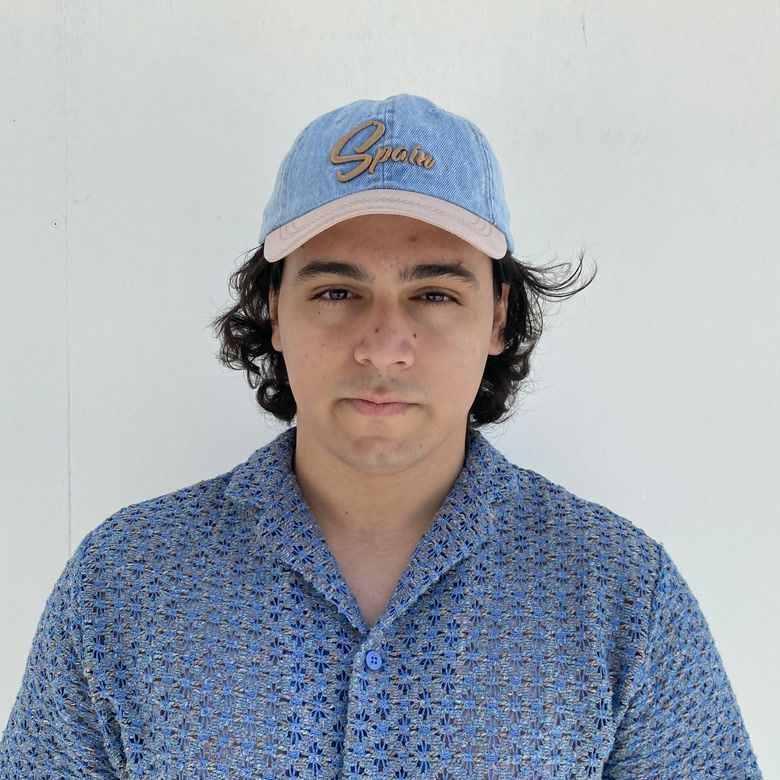

Creative AI Producer · Filmmaker

Cinematic stories, rebuilt frame by frame with AI.
I direct AI music videos, documentaries, short films and product films for brands and artists worldwide.
I direct AI music videos, documentaries, short films and product films for brands and artists worldwide.

I'm Eray Balat — a Creative AI Producer and filmmaker working under the name documenteray (and sometimes ÆRAY). I treat generative AI as a camera, an edit suite and a scoring stage, directing music videos, documentaries, product films and short films for brands and artists worldwide.
I study Radio & Television at Erciyes University and build custom AI pipelines — Midjourney, Kling, Veo, Seedream and Suno — finished in Premiere Pro. My signature: deep-black frames and a glowing light-blue palette (my favorite color).
My most-watched project: concert visuals revisualizing seven years of an artist's career.
A “4-era reconstruction” that revisualizes seven years of an artist's career through a custom AI pipeline — built for @therealbaneva. My signature cinematic, light-blue look across every frame.
Watch on Instagram →Original songs and artist videos, scored with Suno and directed end-to-end.
Long-form, research-driven documentaries built with AI.
Narrative short films — both AI and live-action direction.
Original projects and creative work I direct end-to-end.
My own creative label — original AI films, music videos and concept visuals released under the CITRINE name, built end-to-end with a custom generative pipeline.
Concert visuals for the artist BANEVA — a four-era reconstruction revisualizing seven years of their career through a bespoke AI workflow. My most-watched piece, 32K+ plays, directed as ÆRAY.
End-to-end AI music videos for independent artists — including “Diyardan Diyara” and “Last Stop: Paris” — written, directed, scored with Suno and finished in Premiere Pro.
Quick AI visual experiments and bite-size films.
Open for commissions and brand work — music videos, documentaries, product films & more.